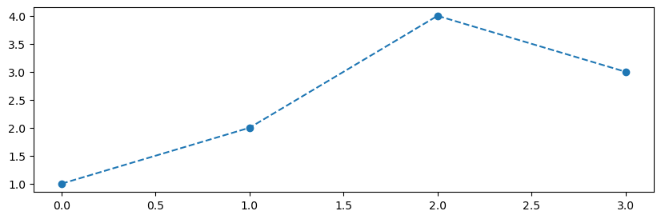
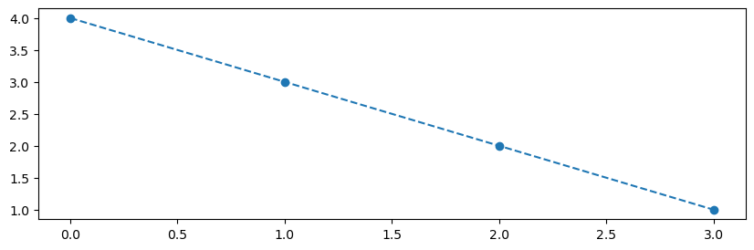
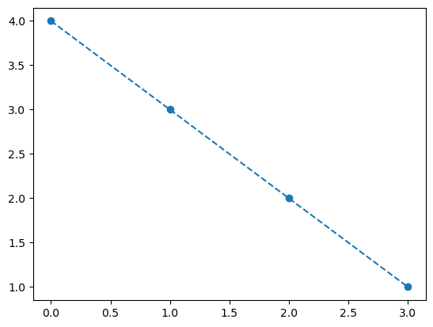
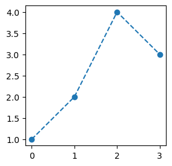
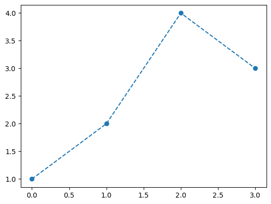

#{{<video https://youtu.be/playlist?list=PLQqh36zP38-zBs464epBRfxPpNBAKqBMS&si=It99ZTYMQHJkCk6z >}}09wk-1: with의 사용

1. 강의영상
2. Imports
import numpy as np
import pandas as pd
import matplotlib.pyplot as plt
import time
#---#
import torch
import transformers
import tarfile/home/cgb3/anaconda3/envs/hf/lib/python3.12/site-packages/tqdm/auto.py:21: TqdmWarning: IProgress not found. Please update jupyter and ipywidgets. See https://ipywidgets.readthedocs.io/en/stable/user_install.html
from .autonotebook import tqdm as notebook_tqdm3. with
A. 기본사용
- 아래와 같이 with를 사용한다. 여기에서 ???? 자리에 올 수 있는 오브젝트는 __enter__ 와 __exit__을 포함하는 어떠한 오브젝트이다. (그리고 이러한 오브젝트를 “컨텍스트 매니저”라고 부른다)
with ????:
블라블라~
야디야디~# 예제1 – 기본예제
- context manager 를 찍어내는 Dummy 클래스
class Dummy:
def __enter__(self):
print("enter")
def __exit__(self,*args): # *args는 에러처리 관련된 __exit__의 입력변수들
print("exit") d = Dummy()
d.__enter__()
print("context")
d.__exit__()enter
context
exitd = Dummy()
with d:
print("context")enter
context
exit- with 뒤에 올 수 있는 오브젝트는 __enter__ 와 __exit__ 을 포함해야한다.
lst = [1,2,3]
with lst:
pass TypeError: 'list' object does not support the context manager protocolwith 33:
pass TypeError: 'int' object does not support the context manager protocol# 예제2 – 타이머
원래 사용패턴
t1 = time.time()
np.random.randn(100,100) + 30
t2 = time.time()
t2-t10.0005712509155273438t1 = time.time()
np.random.randn(10000,10000) + 30
t2 = time.time()
t2-t11.5068929195404053class Timer:
def __enter__(self):
self.t1 = time.time()
def __exit__(self,*args):
self.t2 = time.time()
print(f"{self.t2 - self.t1:.4f} 초 걸림")with Timer():
np.random.randn(10000,10000) + 301.4989 초 걸림#
# 예제3
class 미분꼬리표추적금지:
def __enter__(self):
torch.set_grad_enabled(False)
def __exit__(self,*args):
torch.set_grad_enabled(True)a = torch.tensor(1.0,requires_grad = True)
atensor(1., requires_grad=True)b = a+1
c = 2*b
d = c/3
b,c,d(tensor(2., grad_fn=<AddBackward0>),
tensor(4., grad_fn=<MulBackward0>),
tensor(1.3333, grad_fn=<DivBackward0>))with 미분꼬리표추적금지():
b = a+1
c = 2*b
d = c/3
b,c,d(tensor(2.), tensor(4.), tensor(1.3333))#
# 예제4
아래의 코드를 모델을 활용하여 로짓을 계산하라.
model = transformers.AutoModelForSequenceClassification.from_pretrained(
"distilbert/distilbert-base-uncased", num_labels=2
)
model_input = {
'input_ids': torch.tensor([[101, 2023, 3185, 2003, 6659, 2021, 2009, 2038, 2070, 2204, 3896, 1012, 102]]),
'attention_mask': torch.tensor([[1, 1, 1, 1, 1, 1, 1, 1, 1, 1, 1, 1, 1]]),
'labels': torch.tensor([0])
}Some weights of DistilBertForSequenceClassification were not initialized from the model checkpoint at distilbert/distilbert-base-uncased and are newly initialized: ['classifier.bias', 'classifier.weight', 'pre_classifier.bias', 'pre_classifier.weight']
You should probably TRAIN this model on a down-stream task to be able to use it for predictions and inference.logits = model(**model_input).logits
logitstensor([[0.0505, 0.1006]], grad_fn=<AddmmBackward0>)(풀이)
with 미분꼬리표추적금지():
logits = model(**model_input).logits
print(logits)tensor([[0.0505, 0.1006]])(풀이2)
with torch.no_grad():
logits = model(**model_input).logits
print(logits)tensor([[0.0505, 0.1006]])ref: https://huggingface.co/docs/transformers/tasks/sequence_classification
#
B. 약간고급사용
# 예비학습
- 기본플랏
plt.plot([1,2,4,3],'--o')
- 크기를 (10,3)으로 조정
plt.rcParams['figure.figsize'] = [10, 3]
plt.plot([1,2,4,3],'--o')
- 한번 뒤틀린 설정이 그대로 있음
plt.plot([4,3,2,1],'--o')
- 설정을 원래대로
plt.rcdefaults()plt.plot([4,3,2,1],'--o')
#
# 예제4 – 크기조정
class FigureSizeContext:
def __enter__(self):
def resize(w,h):
plt.rcParams['figure.figsize'] = [w, h]
return resize
def __exit__(self,*args):
plt.rcdefaults()- 사용예시1
context_manager = FigureSizeContext()
xxxx = context_manager.__enter__()
xxxx(3,3)
plt.plot([1,2,4,3],'--o')
context_manager.__exit__()
plt.plot([1,2,4,3],'--o')
- 사용예시2
with FigureSizeContext() as xxxx:
xxxx(3,3)
plt.plot([1,2,4,3],'--o')
plt.plot([1,2,4,3],'--o')
- 정리하면.. with는 아래와 같이 as와 함께 사용가능한데,
with context_manager as xxxx:
블라블라~
야디야디~여기에서 as뒤의 xxxx 자리는 context_manager.__enter__의 리턴값이 차지하게 된다.
#
# 예제5 – 샌드위치생성기
class 샌드위치생성기:
def __init__(self,빵="기본빵"):
self.빵 = 빵
self.재료들 = []
def __enter__(self):
print(f"---{self.빵}---")
return self
def __exit__(self,*args):
print(f"---{self.빵}---")
def 재료추가하기(self,재료):
print(재료)
self.재료들.append(재료)- 사용예시1
with 샌드위치생성기(빵="허니오트") as 샌드위치:
샌드위치.재료추가하기("양상추")
샌드위치.재료추가하기("치즈")
샌드위치.재료추가하기("베이컨")
샌드위치.재료추가하기("오이")---허니오트---
양상추
치즈
베이컨
오이
---허니오트---샌드위치.빵, 샌드위치.재료들('허니오트', ['양상추', '치즈', '베이컨', '오이'])- 사용예시2
with 샌드위치생성기(빵="허니오트") as 샌드위치:
샌드위치.재료추가하기("토마토")
샌드위치.재료추가하기("치즈")
샌드위치.재료추가하기("베이컨")
샌드위치.재료추가하기("에그마요")---허니오트---
토마토
치즈
베이컨
에그마요
---허니오트---샌드위치.빵, 샌드위치.재료들('허니오트', ['토마토', '치즈', '베이컨', '에그마요'])- 아래의 두 코드가 같은 효과를 가진다.
with 샌드위치생성기(빵="허니오트") as 샌드위치:
샌드위치.재료추가하기("토마토")
샌드위치.재료추가하기("치즈")
샌드위치.재료추가하기("베이컨")
샌드위치.재료추가하기("에그마요")샌드위치 = 샌드위치생성기(빵="허니오트")
샌드위치 = 샌드위치.__enter__()
샌드위치.재료추가하기("토마토")
샌드위치.재료추가하기("치즈")
샌드위치.재료추가하기("베이컨")
샌드위치.재료추가하기("에그마요")
샌드위치.__exit__()- 따라서 __enter__ 가 self를 리턴하는 경우에는 with 샌드위치생성기(빵="허니오트") as 샌드위치 이 부분을 해석할때 “샌드위치생성기(빵="허니오트") 코드의 실행결과 만들어지는 오브젝트를 샌드위치로 저장”한다고 해석해도 무리가 없다.
#
# 예제6
- example.txt 를 만들고 “asdf” 라는 글자를 넣는 파이썬코드
with open("example.txt","w") as file:
# 대충해석: open("example.txt","w") 을 실행하여 나오는 오브젝트를 file로 받음
# 더 엄밀한 해석:
# open("example.txt","w") 을 실행하여 나오는 오브젝트를 ???라고 하자.
# 그런데 ??? 에는 `__enter__`가 있을텐데, 그 `__enter__`를 실행하여 나오는 오브젝트를
# file로 받음.
file.write("asdf") - 분석하기: “대충해석”으로 해석해도 되는지 체크
file<_io.TextIOWrapper name='example.txt' mode='w' encoding='UTF-8'>context_manager = open("example.txt","w")
file = context_manager.__enter__()type(context_manager), type(file)(_io.TextIOWrapper, _io.TextIOWrapper)- 분석하기2: __enter__ 가 self를 리턴하는지 보자
context_manager.__enter__??
# 코드를 볼 수 없음... -- 아쉬움..Docstring: <no docstring> Type: builtin_function_or_method
#
# 예제7
- example.txt 파일을 example.tar.gz로 압축하는 코드
with tarfile.open("example.tar.gz","w:gz") as tar:
tar.add("example.txt", arcname="example.txt")- 분석하기
context_manager = tarfile.open("example.tar.gz","w:gz")
tar = context_manager.__enter__()
type(context_manager), type(tar)(tarfile.TarFile, tarfile.TarFile)context_manager.__enter__()는self를 리턴하는듯함
- 분석하기2: __enter__ 가 self를 리턴하는지 보자
tar.__enter__??Signature: tar.__enter__() Docstring: <no docstring> Source: def __enter__(self): self._check() return self File: ~/anaconda3/envs/hf/lib/python3.12/tarfile.py Type: method
#